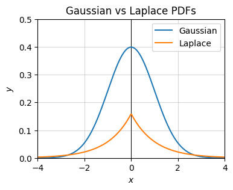

Code
import numpy as np
import sympy as sp
import matplotlib.pyplot as plt
import seaborn as sns
from utils.math_ml import *
plt.rcParams["figure.figsize"] = (4, 3)In this lesson I’ll cover the basic theory of probability, as well as univariate random variables and some of their common probability distributions. Let’s get started. I’ll start by loading the libraries we’ve been working with so far. New to this lesson is the seaborn library, a plotting library that extends matplotlib by adding a bunch of nice statistical plots.
import numpy as np
import sympy as sp
import matplotlib.pyplot as plt
import seaborn as sns
from utils.math_ml import *
plt.rcParams["figure.figsize"] = (4, 3)Probability is the study of randomness. When dealing with randomness, variables in code can often take on unpredictable values, which makes it hard to exactly replicate results. While not always necessary, when you want to ensure that your code is exactly reproducible, you have to remember to set a seed when working with random numbers. The seed can be any number you want, but you should pick it and put it at the top of your code. Setting the seed will ensure that every time your code is run the outputs will agree with the results somebody else gets from running your code.
Since I want to make sure my code in this book is reproducible, I will from now on always set a seed. To set a seed in numpy, you just need to pass in np.random.seed(seed) right after import numpy, where seed can be any positive integer you like. Different seeds will produce random numbers in different orders. Below I’ll choose a seed of zero, which is completely arbitrary.
np.random.seed(0)Probability is a calculus for modeling random processes. There are things we just can’t predict with certainty given the information we have available. Stuff that we can’t predict with certainty we call random, or noise, or non-deterministic. Stuff we can predict with certainty we call deterministic or certain. Here are some examples of these two kinds of processes. The questions in the deterministic column have exact answers, while those in the random column do not.
| Deterministic Process | Random Process |
|---|---|
| Does \(2+2=4\)? | Will it rain today? |
| What is the capital of France? | What is the result of rolling a pair of dice? |
| How many sides does a square have? | What is the next card in a shuffled deck? |
| What is the value of pi? | What is the stock price of Apple tomorrow? |
| What is the boiling point of water at sea level? | What is the winning number for next week’s lottery? |
Deterministic processes aren’t terribly interesting. They either will occur with certainty, or they won’t. Random processes might occur. To quantify what we mean by might we’ll introduce the notion of probability. You can think of probability as a function mapping questions like “Will it rain today?” to a number between \(0\) and \(1\) that indicates our “degree of belief” in whether that question is true,
\[0 \leq \mathbb{Pr}(\text{Will it rain today?}) \leq 1.\]
The question inside this probability function is called an event. An event is anything that might occur. Mathematically speaking, an event is a set that lives in some abstract sample space of all possible outcomes.
When we’re certain an event will occur we say it has probability one, or a 100% chance of happening. When we’re certain an event will not occur we say it has probability zero, or a 0% chance of happening. These extremes are deterministic processes. Random processes are anything in between. For the question “Will it rain today?”, we might say there is a 20% chance of rain, in which case we believe \(\mathbb{Pr}(\text{Will it rain today?}) = 0.2\).
A common theme we’ll see in machine learning is that we’re interested in mapping arbitrary data structures like strings to numerical data structures that we can do mathematical calculations with, like floats or arrays. In this particular example, it’s convenient to map the question “Will it rain today?” to a binary variable I’ll call \(x\), \[ x = \begin{cases} 1, & \text{It will rain today} \\ 0, & \text{It will not rain today}. \end{cases} \]
Then asking for \(\mathbb{Pr}(\text{Will it rain today?})\) is the same thing as asking “what is the probability that \(x=1\)”, or equivalently, what is \(\mathbb{Pr}(x=1)\)? Saying we believe there’s a 20% chance of rain today is equivalent to saying we believe there is a 20% chance that \(x=1\), i.e. \(\mathbb{Pr}(x=1)=0.2\).
Variables like \(x\) are called random variables. They’re a way of encoding random events numerically via some kind of encoding convention like I just used. It’s much more convenient to work with random variables than events or questions since we can now use all our usual mathematical tools like calculus and linear algebra to understand random processes.
To understand how random variables work, it’s often helpful to think of them as the outputs of random number generators. These are algorithms that generate, or sample, random numbers from some given distribution. Unlike regular functions, where a given input will always produce a definite output, a random number generator can (and usually will) produce different outputs every single time the same input is passed in.
The canonical example of a random number generator is called rand. It’s an algorithm for uniformly generating (pseudo) random real numbers \(0 \leq x \leq 1\). Every time we call rand we’ll get a different number with no clear pattern.
Here’s an example. I’ll call rand via the numpy function np.random.rand a bunch of times and print the first 10 outputs. Notice how all over the place they seem to be. The only thing we know is they’re between zero and one.
x = np.random.rand(100)
x[:12]array([0.5488135 , 0.71518937, 0.60276338, 0.54488318, 0.4236548 ,
0.64589411, 0.43758721, 0.891773 , 0.96366276, 0.38344152,
0.79172504, 0.52889492])Think of a random variable informally as being some variable \(x\) whose values are determined by a function \(x=f(n)\), except the function can’t make up its mind or follow a pattern. On one sampling we might get \(x=f(0)=0.548\). Next, \(x=f(1)=0.715\). Next, \(x=f(2)=0.603\). Etc. We can’t force \(x\) to take on a definite value. It jumps around with no clear pattern.
plt.scatter(range(len(x)), x)
plt.xlabel('n')
plt.ylabel('x')
plt.title('$x = f(n)$')
plt.show();Since random variable outputs jump around like this we need a different way to visualize them than just thinking of them as points on the number line. The most useful way to visualize random variables is using a histogram. To create a histogram, we sample a random variable a whole bunch of times, and plot a count of how many times the variable takes on each given value. We then show these counts in a bar chart with the heights indicating the counts for each value.
In matplotlib we can plot histograms of an array of samples x using the function plt.hist(x). Here’s an example. I’ll sample 100 values from rand and put them in an array x, then plot the histogram.
x = np.random.rand(100)
plt.hist(x)
plt.show();Notice that we just sampled \(100\) different values, but we don’t see \(100\) different bars. That’s because histograms don’t plot bars for all values. First, the values get binned into some number of equally spaced subintervals, called bins, then the counts that get plotted are the counts of values inside each bin. In this case, the histogram divides the samples into \(10\) equally spaced bins. If you look carefully you should see \(10\) bars in the plot. We can change the number of bins by passing in a keyword bins specifying how many bints to take.
Since I’ll be using histograms a lot in this lesson I’m going to write a helper function plot_histogram to bundle up the code to plot them nicely. Instead of using plt.hist, however, I’ll use the seaborn library’s sns.histplot, which creates much nicer looking histograms. Seaborn is an extension library of matplotlib made specifically for making nicer plots of data. Ignore the is_discrete argument for now. I’ll use it in the next section.
def plot_histogram(x, is_discrete=False, title='', **kwargs):
if is_discrete:
sns.histplot(x, discrete=True, shrink=0.8, **kwargs)
unique = np.unique(x)
if len(unique) < 15:
plt.xticks(unique)
else:
sns.histplot(x, **kwargs)
plt.title(title)
plt.show()It’s still kind of hard to see if the \(100\) rand samples have any kind of pattern in the above histogram plot. Let’s now sample 10,000 numbers from rand and see if we can find one.
x = np.random.rand(10000)
plot_histogram(x, bins=10, title=f'rand({10000})')It should be increasingly clear now that what’s going on is that rand is sampling numbers between 0 and 1 with equal probability. Each bin should contain roughly \(\frac{10000}{10}=1000\) counts, since there are \(10000\) samples and \(10\) bins. Said differently, the values in each bin should have a \(\frac{1}{10}=0.1\) probability of being sampled. For example, the values in the left-most bin, call it \(I_0 = [0, 0.1]\) should have
\[\mathbb{Pr}(x \in I_0) = \mathbb{Pr}(0 \leq x \leq 0.1) = 0.1.\]
This type of “flat”, equal probability sampling is called uniform random sampling.
You may be questioning that it’s indeed the case that each bin is truly getting sampled as much as the other bins. After all, the plot still clearly shows their heights vary a bit. Some bins have slightly more values than others do. We can look at how many counts are in the bin using np.histogram, which also defaults to \(10\) bins. You can see some bins have as many as \(1037\) values, some as few as \(960\) values.
bin_counts, _ = np.histogram(x)
bin_countsarray([1025, 1036, 999, 981, 1037, 989, 956, 996, 976, 1005])This variation in the bin counts is really due to the fact that we’re only sampling a finite number of values. To get true uniform sampling, where all bins have the same counts, we’d have to sample an infinitely large number of times.
Here’s a rule of thumb for how much the bin counts should be expected to fluctuate as a function of the sample size. If \(N\) is the number of samples, and each bin \(k\) contains \(N_k\) counts (i.e. its bar height is \(N_k\)), then you can expect the counts to fluctuate above and below \(N_k\) by about
\[\sigma_k = \sqrt{N_k\bigg(1 - \frac{N_k}{N}\bigg)}.\]
Said differently, the counts should be expected to roughly lie in a range \(N_k \pm \sigma_k\). This notation means the same thing as saying the counts should roughly speaking lie in the range \([N_k - \sigma_k, N_k + \sigma_k]\). By “roughly”, I mean sometimes bins can have counts outside this range, but it’s uncommon.
In the above example, there are \(N=10000\) samples, and each bin has about \(N_k=1000\) counts, so you should expect the counts to fluctuate by about
\[\sigma_k = \sqrt{1000\bigg(1 - \frac{1000}{10000}\bigg)} = 30,\]
which means the counts should rougly lie in the range \(1000 \pm 30\). This seems to be in line with what we’re seeing experimentally. Notice as the sample size \(N \rightarrow \infty\), the fluctuations \(\sigma_k \rightarrow 0\). We’ll see where this rule comes from later (hint: the binomial distribution).
Back to random variables. Broadly speaking we can divide random variables into two classes of distributions:
I’ll start by talking about the discrete case since it’s easier to understand.
Discrete random variables are variables that can only take on a discrete range of values. Usually this range is a finite set like \(\{0,1\}\) or \(\{1,2,3,4,5,6\}\) or something like that. But they could have an infinite range too, for example the set \(\mathbb{N}\) of all non-negative integers. Rand is not an example of a discrete random variable, since there the range is all of the interval \([0,1]\).
Here are some examples of real life things that can be modeled by a discrete random variable:
Consider a very simple toy problem: rolling a die (singular of dice). If you’ve never seen dice before, they’re white cubes with black dots on each face of the cube. Each face gets some number of black dots on it between 1 and 6. People like to “roll” these dice in games by shaking and tossing them onto the ground. The person with the highest score, i.e. the most number of dots facing upward, wins that round.
Let’s think a little bit about a single die. Suppose I want to roll a single die. Having not rolled the die yet, what should I “expect” the value to be when I roll the die? Call this score \(x\). The possible values I can have are just the number of dots on each face of the die, i.e. \(1,2,3,4,5,6\). This alone doesn’t tell me what the chance is that any given \(x\) turns up in a roll. We need some other information.
Perhaps your common sense kicks in and you think, “Well clearly each number has an equal chance of showing up if you roll the die”. This is called the principle of indifference. In practice you’d usually be right. You’re saying that, since we don’t have any other information to go on, each number should have an equal chance of showing up on each roll. That is, on any given roll, the random variable \(x\) should take on each value \(k=1,2,\cdots,6\) with probability,
\[p_k = \mathbb{Pr}(x=k) = \frac{1}{6}.\]
This just says that the probability of rolling \(x=1\) is \(p_1 = \frac{1}{6}\), the probability of rolling \(x=2\) is also \(p_2 = \frac{1}{6}\), etc. Notice that these probabilities satisfy two properties that all probabilities must satisfy: 1. Each probability is non-negative: \(p_k = \frac{1}{6} \geq 0\), 2. The sum of all the possible probabilities is one: \(\sum_{k=1}^6 p_k = p_1 + p_2 + p_3 + p_4 + p_5 + p_6 = 6 \cdot \frac{1}{6} = 1\).
These two properties are the defining characteristics of a probability. The second condition is just a mathematical way of saying that rolling the die must return some value \(x \in \{1,2,3,4,5,6\}\). It can’t just make up some new value, or refuse to answer.
Anyway, suppose I rolled the die \(N=36\) times and got the following values:
| Roll | 1 | 2 | 3 | 4 | 5 | 6 | 7 | 8 | 9 | 10 | 11 | 12 | 13 | 14 | 15 | 16 | 17 | 18 | 19 | 20 | 21 | 22 | 23 | 24 | 25 | 26 | 27 | 28 | 29 | 30 | 31 | 32 | 33 | 34 | 35 | 36 |
|---|---|---|---|---|---|---|---|---|---|---|---|---|---|---|---|---|---|---|---|---|---|---|---|---|---|---|---|---|---|---|---|---|---|---|---|---|
| Value | 3 | 4 | 5 | 4 | 3 | 1 | 3 | 6 | 5 | 2 | 1 | 5 | 4 | 2 | 1 | 1 | 1 | 6 | 5 | 6 | 3 | 5 | 5 | 3 | 3 | 6 | 6 | 1 | 5 | 4 | 2 | 2 | 4 | 6 | 2 | 4 |
We can make a histogram out of these and check the principle of indifference by verifying the bins are all of about the same height (at least as close to the same as only 30 rolls will allow). Note that I’m now using is_discrete=True here, which tells the helper function to give each unique \(k\) its own bin.
x = [3, 4, 5, 4, 3, 1, 3, 6, 5, 2, 1, 5, 4, 2, 1, 1, 1, 6, 5, 6, 3, 5, 5, 3, 3, 6, 6, 1, 5, 4, 2, 2, 4, 6, 2, 4]
plot_histogram(x, is_discrete=True, title='36 Die Rolls')Given the fact that I only rolled \(36\) times, this histogram looks very uniform, giving a pretty strong hint that each value has an equal probability of being rolled. Since most bars have height \(6\), they correspond to probabilities of \(\frac{6}{36}=\frac{1}{6}\), which is what our common sense expected. Note the counts can fluctuate in this case in a range of about \(6 \pm 2\). This is an example of a fair die.
What if our common sense was incorrect? What if I rolled the die a bunch of times and found out some numbers occurred a lot more often than others? This would happen if the die were weighted unevenly, or loaded. In this case we’re left to assign some weight \(N\) to each number \(k\).
To determine what the right weights should be empirically, probably the easiest way would again be to roll the die a bunch of times and count how many times each value \(k\) occurs. Those counts will be your weights \(N_k\). These are just the heights of each bin in the histogram. To turn them into probabilities \(p_k\), divide by the total number of rolls, call it \(N\). The probabilities would then be given approximately by
\[p_k = \mathbb{Pr}(x=k) \approx \frac{N_k}{N}.\]
That is, the probability \(p_k\) is just a ratio of counts, the fraction of times \(x=k\) occurred in \(N\) counts. As \(N \rightarrow \infty\) this equality goes from approximate to exact. In fact, we could define the probability \(p_k = \mathbb{Pr}(x=k)\) as the limit
\[p_k = \mathbb{Pr}(x=k) = \lim_{N \rightarrow \infty} \frac{N_k}{N}.\]
This is an alternate way of defining a probability, different from the “degree of belief” approach I used above. This is usually called the frequentist or objective approach. In this approach, probability is the frequency of the number of times an outcome occurs in an experiment, i.e. \(\frac{N_k}{N}\). In contrast, the “degree of belief” perspective is called the Bayesian or subjective approach. Both approaches have their uses, so we’ll go back and forth between the two as it suits us.
To test if your die is loaded, what you can do is roll the die \(N\) trials and calculate the probabilities. If they’re all roughly equal to \(1/6\) like the example above then the die is fair. Otherwise it’s loaded. Suppose when I’d rolled the die I’d instead gotten the following outcomes:
| Roll | 1 | 2 | 3 | 4 | 5 | 6 | 7 | 8 | 9 | 10 | 11 | 12 | 13 | 14 | 15 | 16 | 17 | 18 | 19 | 20 | 21 | 22 | 23 | 24 | 25 | 26 | 27 | 28 | 29 | 30 | 31 | 32 | 33 | 34 | 35 | 36 |
|---|---|---|---|---|---|---|---|---|---|---|---|---|---|---|---|---|---|---|---|---|---|---|---|---|---|---|---|---|---|---|---|---|---|---|---|---|
| Value | 4 | 4 | 5 | 4 | 3 | 5 | 3 | 6 | 5 | 6 | 1 | 5 | 4 | 5 | 6 | 5 | 1 | 6 | 5 | 6 | 3 | 5 | 5 | 4 | 3 | 6 | 6 | 4 | 5 | 4 | 2 | 5 | 4 | 6 | 2 | 4 |
Let’s plot the histogram of these outcomes and compare to the fair die case.
x = [4, 4, 5, 4, 3, 5, 3, 6, 5, 6, 1, 5, 4, 5, 6, 5, 1, 6, 5, 6, 3, 5, 5, 4, 3, 6, 6, 4, 5, 4, 2, 5, 4, 6, 2, 4]
plot_histogram(x, is_discrete=True, title='36 Die Rolls (Round 2)')Notice how now the outcomes are skewed towards higher values. This clearly doesn’t look uniform anymore since most of the counts aren’t in the expected range of \(6 \pm 2\). The die has been “loaded to roll high”.
Using the experimental approach we can estimate what the probability of rolling each value is. To do that, we can just take each value \(k\) and sum up the number of times \(x=k\) and divide it by the total counts \(N\). This will return an array of probabilities, where each index \(k\) contains the entry \(p_{k+1} = \frac{N_k}{N}\).
support = np.unique(x)
N = len(x)
Nk = [sum([x == k]) for k in support]
p = Nk / N
[f"Pr(x={i+1}) = {round(p[i], 3)}" for i in range(len(p))]['Pr(x=1) = 0.056',
'Pr(x=2) = 0.056',
'Pr(x=3) = 0.111',
'Pr(x=4) = 0.25',
'Pr(x=5) = 0.306',
'Pr(x=6) = 0.222']Of course, there’s nothing special about a die. We can define probabilities in exactly the same way for any discrete random variable. A random variable \(x\) is called discrete if it can take on one of \(n\) countable values \(x_0,x_1,\cdots,x_{n-1}\). Suppose we run an experiment \(n\) times and observe the outcomes of \(x\) at each trial. If \(x=x_k\) for some number of counts \(n_j\), then the probability \(x=x_k\) is given by the limit of running the experiment infinitely many times,
\[p_k = \mathbb{Pr}(x=k) = \lim_{N \rightarrow \infty} \frac{N_k}{N}.\]
The set of values that \(x\) can take on are called the support of the random variable. For values outside the support, it’s assumed the probability is zero. As will always be true with probabilities, it’s still the case that each probability must be non-negative, and they must all sum to one,
\[p_k \geq 0, \quad \sum_{k=0}^{n-1} p_k = 1.\]
While we have an experimental way to calculate probabilities now, it would be useful to define probabilities as functions of random variables so we can study them mathematically. These functions are called probability distributions. Suppose the probabilities \(p_k\) are given by some function \(p(x)\) mapping outcomes to probabilities. When this is true, we say \(x\) is distributed as \(p(x)\), written in short-hand as \(x \sim p(x)\). If \(x\) is discrete, we call the function \(p(x)\) a probability mass function, or PMF for short.
In the simple case of the fair die, since each \(p_k = \frac{1}{6}\), its PMF is just the simple constant function \(p(x) = \frac{1}{6}\). This distribution is an example of the discrete uniform distribution. If \(x\) is a discrete random variable taking on one of \(k\) outcomes, and \(x\) is distributed as discrete uniform, then its probabilities are given by \(p_k = \frac{1}{n}\) for all \(k\). In histogram language, all bins have approximately the same number of counts.
In the less simple case of the loaded die we had to estimate each probability empirically. Supposing we could calculate those probabilities exactly, the PMF for that particular loaded die would look like
\[ p(x) = \begin{cases} 0.056, & x = 1, \\ 0.056, & x = 2, \\ 0.111, & x = 3, \\ 0.250, & x = 4, \\ 0.306, & x = 5, \\ 0.220, & x = 6. \end{cases} \]
This is an example of a categorical distribution. Their histograms can look completely arbitrary. Each bin can contain as many counts as it likes. All that matters is that \(k\) is finite and all the probabilities sum to one. Any time you take a discrete uniform random variable and weigh the outcomes (e.g. by loading a die) you’ll create a categorical distribution.
Typically each distribution will have one or more parameters \(\theta\) that can be adjusted to change the shape or support of the distribution. Instead of writing \(p(x)\) for the PMF, when we want to be explicit about the parameters we’ll sometimes write \(p(x; \theta)\). The semi-colon is used to say that any arguments listed after it are understood to be parameters, not function inputs. In this notation, parameters of a distribution are assumed to be known, non-random values. We’ll relax this requirement below, but assume parameters are non-random for now.
For example, the discrete uniform distribution has two parameters indicating the lowest and highest values in the support, called \(a\) and \(b\). We could thus express its PMF as \(p(x;a,b)\), which means “the probability of \(x\) given known parameters \(a\) and \(b\)”.
Using these parameters, it’s also common to use special symbols as a short-hand for common distributions. For example, the discrete uniform distribution with parameters \(a\) and \(b\) is often shortened to something like \(DU(a,b)\). If we want to say \(x\) is a discrete uniform random variable, we’d write \(x \sim DU(a,b)\). You’ll also sometimes see people use the symbol to write the PMF as well, for example \(DU(x;a,b)\).
Some discrete probability distributions occur so frequently that they get a special name. Each one tends to occur when modeling certain kinds of phenomena. Here are a few of the most common discrete distributions. I’ll just state them and summarize their properties for future reference.
np.random.randint(a, b)a = 1
b = 7
x = np.random.randint(a, b, size=100000)
plot_histogram(x, is_discrete=True, stat='probability', title=f'$DU({a},{b})$ PMF')np.random.choice([0, 1], p=[1 - p, p])p = 0.7
x = np.random.choice([0, 1], p=[1 - p, p], size=1000)
plot_histogram(x, is_discrete=True, stat='probability', title=f'$Ber({p})$ PMF')Symbol: \(\text{Cat}(p_0,p_1,\cdots,p_{k-1})\) or \(\text{Cat}(\mathbf{p})\)
Parameters: \(k\) non-negative real numbers \(p_j\) that sum to one, each representing the probability of getting \(x_j\)
Support: \(x = 0, 1, \cdots, k-1\)
Probability mass function: \[ p(x; \mathbf{p}) = \begin{cases} p_0 & x = 0, \\ p_1 & x = 1, \\ \vdots & \vdots \\ p_{k-1} & x = k-1. \end{cases} \]
Cumulative distribution function: \[ P(x; \mathbf{p}) = \begin{cases} 0 & \text{if } x \leq x_0 \\ p_0 & \text{if } x_0 \leq x \leq x_1 \\ p_0 + p_1 & \text{if } x_1 \leq x \leq x_2 \\ p_0 + p_1 + p_2 & \text{if } x_2 \leq x \leq x_3 \\ \vdots & \vdots \\ 1 & \text{if } x \geq x_{n-1}. \end{cases} \]
Random number generator: np.random.choice(np.arange(k), p=p)
Notes:
p = [0.2, 0.5, 0.3]
x = np.random.choice(np.arange(len(p)), p=p, size=1000)
plot_histogram(x, is_discrete=True, stat='probability', title=f'$Cat{tuple(p)}$ PMF')np.random.binomial(n, p)n = 10
p = 0.7
x = np.random.binomial(n, p, size=1000)
plot_histogram(x, is_discrete=True, stat='probability', title=f'$Bin{(n,p)}$ PMF')np.random.poisson(lambda)lambda_ = 4
x = np.random.poisson(lambda_, size=1000)
plot_histogram(x, is_discrete=True, stat='probability', title=f'$Poisson({lambda_})$ PMF')We’ve seen how to calculate the probabilities of any one outcome. The probability that \(x=k\) is given by \(\text{Pr}(x=k) = p(k)\), where \(p(k)\) is the PMF. It’s natural to then ask how we can think about probabilities of multiple outcomes. For example, consider again the situation of rolling a fair die. Suppose we were interested in knowing what the probability was of rolling an even number, i.e. \(x=2,4,6\). How would we approach this? Your intuition suggests the right idea. We can just sum the probabilities of each outcome together,
\[\mathbb{Pr}(x\text{ is even}) = \mathbb{Pr}(x=2,4,6) = p(2) + p(4) + p(6) = \frac{1}{6} + \frac{1}{6} + \frac{1}{6} = \frac{1}{2}.\]
This same idea extends to any discrete set. Suppose we’re interested in the probability that some discrete random variable \(x\) takes on values in some set \(E = \{x_0, x_1, \cdots, x_{m-1}\}\). Then all we need to do is some over the probabilities of all the outcomes in \(E\), i.e.
\[\mathbb{Pr}(x \in E) = \sum_{k \in E} p(k) = \sum_{i=0}^{m-1} p(x_i) = p(x_0) + p(x_1) + \cdots p(x_{m-1}).\]
When the set of interest is the entire support of \(x\), the right-hand side is just the sum the probability of all possible outcome, which is just one. Thus, we’ll always have \(0 \leq \mathbb{Pr}(x \in E) \leq 1\) for any set \(E\).
Though we don’t really have to for discrete variables, it’s conventional to define another function \(P(x)\) called the cumulative distribution function, or CDF. It’s the probability \(x \in (-\infty, x_0]\) for some fixed value \(x_0 \in \mathbb{R}\),
\[P(x_0) = \mathbb{Pr}(x \leq x_0) = \sum_{k \leq x_0} p(k) = \sum_{k=-\infty}^{\text{int}(x_0)} p(k),\]
where it’s understood that \(p(k)=0\) whenever \(k\) isn’t in the support of \(x\). Note the CDF is a real-valued function. We can ask about \(P(x_0)\) for any \(x_0 \in \mathbb{R}\), not just discrete values of \(x_0\).
But why should we care? It turns out if we know the CDF in some simple form, we can use it to calculate the probability \(x\) is in any other interval by differencing the CDF at the endpoints. Suppose we’re interested in the probability \(a \leq x \leq b\). If we know the CDF for a particular distribution in some simple form, we can just difference it to get the probability of being in the interval, i.e.
\[\mathbb{Pr}(a \leq x \leq b) = \mathbb{Pr}(x \leq b) - \mathbb{Pr}(x \leq a) = P(b) - P(a).\]
This fact is more useful for continuous distributions than discrete ones, since in the discrete case we can always just sum over the values, which is usually pretty quick to do.
Here’s a useful application where probabilities of multiple outcomes can sometimes come in handy. Suppose you’re applying to a bunch of jobs, and you want to know what is the probability that you’ll get at least one offer. Suppose you’ve applied to \(n\) jobs. For simplicity, assume each job has roughly the same probability \(\text{p}\) of giving you an offer. Then each job application looks kind of like the situation of flipping a coin. If \(x_i=1\) you get an offer, if \(x_i=0\) you get rejected. We can thus think of each job application as a Bernoulli random variable \(x_i \sim \text{Ber}(\text{p})\).
Now, assume that the job applications are all independent of each other, so one company’s decision whether to give you an offer doesn’t affect another company’s decision to give you an offer. This isn’t perfectly true, but it’s reasonably true. In this scenario, the total number of offers \(x\) you get out of \(n\) job applications will then be binomially distributed, \(x \sim \text{Bin}(n, \text{p})\).
We can use this fact to answer the question we started out with: What is the probability that you receive at least one offer? It’s equivalent to asking, if \(x\) is binomial, what is the probability that \(x \geq 1\)? Now, since \(x\) is only supported on non-negative values, we have
\[\begin{align*} \mathbb{Pr}(x \geq 1) &= \mathbb{Pr}(x \geq 0) - \mathbb{Pr}(x=0) \\ &= 1 - \mathbb{Pr}(x=0) \\ &= 1 - p(0;n,\text{p}) \\ &= 1 - \binom{n}{0} \text{p}^0 (1-\text{p})^{n-0} \\ &= 1 - \frac{n!}{0!(n-0)!} (1-\text{p})^n \\ &= 1 - (1-\text{p})^n. \end{align*}\]
We thus have a formula. The probability of receiving at least one job offer from applying to \(n\) jobs, assuming each gives an offer with probability \(\text{p}\), and applications are independent of each other, is
\[\mathbb{Pr}(\text{at least one offer}) = 1 - (1-\text{p})^n.\]
Here’s an example of how this formula can be useful. Suppose you believe you have a 10% chance of getting an offer from any one company you apply to, so \(\text{p}=0.1\). If you apply to \(n=10\) jobs, you’ll have about a 34.86% chance of receiving at least one offer.
p = 0.1
n = 10
prob_offer = 1 - (1 - p) ** n
prob_offer0.6513215599Let’s now ask how many jobs you’d have to apply to to give yourself at least a 90% chance of getting at least one job offer? Here’s what you can do. Let \(O = \mathbb{Pr}(\text{at least one offer})\), so \(O = (1-p)^n\). Set \(O=0.9\) and solve for \(n\). Then you’d have
\[\begin{align*} O &= 1 - (1-p)^n \\ (1-p)^n &= 1 - O \\ n \log(1-p) &= \log(1 - O) \\ n &= \frac{\log(1 - O)}{\log(1 - p)}. \end{align*}\]
Plugging in \(p=0.1\) and \(O=0.9\) gives \(n \approx 21.85\). Thus, you’d need to apply to at least \(n=22\) jobs to have a decent chance of getting at least one offer. Here’s a plot of this idea. Each curve is a plot of \(n=n(p)\) for different choices of \(O\), in this case, 50%, 75%, 90%, and 99%.
p = np.linspace(0.01, 0.999, 100)
O = [0.5, 0.75, 0.9, 0.99]
for o in O:
n = np.log(1 - o) / np.log(1 - p)
plt.plot(p, n, label=f'$O={round(o*100)}$%')
plt.xticks(0.1 * np.arange(11))
plt.ylim(0, 70)
plt.title(
"""How many jobs would you have to
apply to to get at least one job offer
with confidence $O$?""".title(), fontsize=11)
plt.xlabel('$p$')
plt.ylabel('$n$')
plt.grid(True, alpha=0.5)
plt.legend()
plt.show()The moral of this story is that you have two ways to up your chances of getting a job offer: Up your chances of getting any one job (i.e. increase \(p\)), or apply to a lot more jobs (i.e. increase \(n\)). The more confident you want to be of getting an offer (i.e. \(O\)), the more jobs you’ll need to apply to. This same idea can be used to model the probability of at least one occurrence for any binary event similar to this.
So far we’ve covered discrete random variables, ones that take on a finite (or countably infinite) set of values. We can also consider random variables that take on a continuous range of values. For example, a continuous random variable \(x\) can take on values in the entire interval \([0,1]\), or the whole real line \(\mathbb{R} = (-\infty, \infty)\). The key difference between continuous variables and discrete variables is that we have to think in terms of calculus now. Instead of points we’ll have infinitesimal areas. Instead of sums we’ll have integrals.
It may not be obvious to you that there are practical examples where continuous random variables would be useful. Here are some examples:
In fact, any continuous variable you can think of could be treated as random depending on the situation. Even if a variable is completely deterministic, there may be situations where it’s helpful to think of it as random. The whole idea of Monte Carlo methods is based on this idea, in fact.
I showed example of a continuous random variable already at the beginning of this lesson, when I introduced the idea of random number generators like rand. Rand is an example of a function that can (approximately) generate samples of a continuous random variable. In particular, it samples uniformly from the interval \([0,1]\). I already showed what its histogram looks like for a large number of samples. Here it is again.
x = np.random.rand(10000)
plot_histogram(x, bins=10, title=f'rand({10000})')Let’s now try to figure out how we should define the probability of values sampled from rand. In the discrete case, we were able to define probabilities by running an experiment (e.g. rolling a die a bunch of times). We could look at the ratio of the number of times \(N_k\) an outcome \(k\) occurred over the number of total trials \(N\). This made sense in the discrete case since we could reasonably well rely on each outcome \(x=k\) occurring enough times to get a meaningful count.
This approach doesn’t work well for continuous random variables. Suppose \(x\) is the random variable resulting from rand, uniform on the interval \([0,1]\). If I sample a single value from rand, there’s no reason to assume I’ll ever see that exact value again. There are uncountably infinitely many values to choose from in \([0,1]\), so I’m pretty much guaranteed to never see the same value twice. Instead of counting how many times each value occurs, what I can do is use the binning trick we saw with histograms. For example, I can divide \([0,1]\) up into ten subintervals (or bins)
\[I_0=[0,0.1], \quad I_1=[0.1,0.2], \quad I_3=[0.2,0.3], \quad \cdots, \quad I_9=[0.9,1].\]
If I sample one value from rand it’s guaranteed to be in one of these subintervals \(I_k\). If I sample a whole bunch of values from rand, say \(N=1000\), I should expect each \(I_k\) to contain about \(N_k=100\) counts (10% of the total since there are 10 bins). It thus seems to make perfect sense to define a probability on each \(I_k\),
\[\mathbb{Pr}(x \in I_k) = \frac{N_k}{N} = \frac{100}{1000} = \frac{1}{10} = 0.1.\]
N = 10000
M = 10
dx = 1 / M
x = np.random.rand(N)
plot_histogram(x, bins=M, title=f'M=${M}$ subintervals of length $dx={dx}$')We still want to approximate the discrete idea of having a probability \(\mathbb{Pr}(x=k)\). How can we do it using this idea of subintervals? Enter calculus. What we can imagine doing is allowing each subinterval \(I_k\) to become infinitesimally small. Suppose we subdivide \([0,1]\) into \(M\) total subintervals each of infinitesimal length \(dx\), satisfying \(M=\frac{1}{dx}\), i.e.
\[I_0=[0,dx], \quad I_1=[dx, 2dx], \quad I_2=[2dx, 3dx], \quad \cdots, \quad I_{M-1}=[(M-1)dx, 1].\]
Suppose \(x_0\) is some point in one of these tiny intervals \(I_k=[kdx, (k+1)dx]\). Since each \(I_k\) is a very tiny interval, the probability that \(x \approx x_0\) is pretty much exactly the same thing as the probability that \(x \in I_k\). Let’s thus define the probability that \(x \approx x_0\) as the probability that \(x \in I_k\),
\[\mathbb{Pr}(x \approx x_0) = \mathbb{Pr}(x \in I_k) = \lim_{N \rightarrow \infty} \frac{N_k}{N}.\]
Here’s an approximate representation of this idea. I won’t be able to make \(M=10^{300}\) bins like I’d like, but I can at least make bins so you can see the point. I’ll need to generate a huge number of samples \(N\) so the histogram will populate. Notice each \(N_k \approx \frac{N}{M} = 1000\). That is,
\[\mathbb{Pr}(x \approx x_0) \approx \frac{N_k}{N} \approx \frac{N/M}{N} = \frac{1}{M} = dx.\]
Evidently, the probability \(x \approx x_0\) is infinitesimal, so very very tiny. This is why you’ll basically never sample the same value twice.
N = 1000000
M = N // 1000
dx = 1 / M
x = np.random.rand(N)
plot_histogram(x, bins=M, title=f'M=${M}$ subintervals of length $dx={dx}$')The facts I’ve shown about rand extend to more general continuous random variables as well. Suppose \(x\) is supported on some interval \([a,b]\). It could even be infinite. Let’s divide this interval up into \(M\) tiny sub-intervals of length \(dx\), where \(M\) must satisfy \(M = \frac{b-a}{dx}\),
\[I_0=[a,a+dx], \quad I_1=[a+dx, a+2dx], \quad I_2=[a+2dx, a+3dx], \quad \cdots, \quad I_{M-1}=[a+(M-1)dx, b].\]
Now, run an experiment \(N\) times and count how many times outcomes occur, not for each \(x\), but for each subinterval \(I_k=[a+kdx, a+(k+1)dx]\). If \(x_0 \in I_k\), that is, if \(a+kdx \leq x_0 \leq a+(k+1)dx\), then the probability that \(x \approx x_0\) is defined by,
\[\mathbb{Pr}(x \approx x_0) = \mathbb{Pr}(x \in I_k) = \lim_{N \rightarrow \infty} \frac{N_k}{N}.\]
Just as with the uniform case before, it’s useful to think of the probability \(\mathbb{Pr}(x \approx x_0)\) as explicitly being proportional to the subinterval length \(dx\). In the uniform case it was just \(\mathbb{Pr}(x \approx x_0)=dx\) exactly. In the more general case, \(\mathbb{Pr}(x \approx x_0)\) may depend on the value of \(x_0\), so we need to weight the right-hand side by some non-negative weighting function \(p(x) \geq 0\), so
\[\mathbb{Pr}(x \approx x_0) = \mathbb{Pr}(x \in I_k) = p(x_0)dx.\]
This weighting function \(p(x)\) is called the probability density function, or PDF for short. It’s the continuous analogue of the probability mass function from the discrete case (hence why I use the same notation). Unlike the discrete PMF, the PDF is not a probability all by itself. It’s a probability per infinitesimal unit \(dx\). That is, it’s a density. For this reason, the PDF need not sum to one. It only needs to be non-negative, i.e. all outputs \(p(x_0)\) should lie on or above the x-axis, never below it. But any one output \(p(x_0)\) can be arbitrarily large, even \(\infty\)!
What must be true is that all probabilities sum to one. Since each \(\mathbb{Pr}(x \approx x_0)\) is infinitesimal now, this means all probablities must integrate to one over the support of \(x\). If \(x\) is supported on \([a,b]\), then
\[\mathbb{Pr}(a \leq x \leq b) = \sum_{k=0}^{M-1} \mathbb{Pr}(x \in I_k) = \int_a^b p(x)dx = 1.\]
This means we can think of a PDF as being any non-negative function that integrates to one. In fact, any function that satisfies this property is a valid PDF for some continuous random variable.
Specifying the functional form of the PDF \(p(x)\) creates a continuous probability distribution. By specifying \(p(x)\), we’ve uniquely specified what the probabilities have to be for the variable \(x\). In the next section I’ll define some of the most common continuous distributions.
Just as with discrete probabilities, we can get the probability that \(x\) is in any set by summing over all the values in that set. The only difference is we replace the sum with an integral over the set. For example, the probability that \(c \leq x \leq d\) is given by
\[\mathbb{Pr}(c \leq x \leq d) = \int_c^d p(x)dx.\]
We can also define a cumulative distribution function \(P(x)\) for continuous probabilities in exactly the same way, except again replacing sums with integrals,
\[P(x_0) = \mathbb{Pr}(x \leq x_0) = \int_{-\infty}^{x_0} p(x')dx',\]
where it’s understood that \(p(x')=0\) whenever \(x'\) is outside the support of \(x\).
If we can obtain the CDF for a distribution, we can calculate the probability \(x\) is in any set without having to evaluate an integral. For example, if the set is again the interval \([c,d]\), then
\[\mathbb{Pr}(c \leq x \leq d) = P(d) - P(a).\]
This is just a restatement of the rule for definite integrals from the calculus lesson, if \(f(x)=\frac{d}{dx}F(x)\), then
\[\int_c^d f(x) dx = F(d) - F(c).\]
To show a brief example, I’ll calculate the CDF of the rand distribution shown already, where \(x\) is uniform on \([0,1]\). I already showed that its PDF is just \(p(x)=1\) for all \(0 \leq x \leq 1\). Outside this interval \(p(x)=0\) everywhere. Using the PDF I can calculate the CDF by integrating. There are three cases to consider. If \(x < 0\), the CDF will just be \(P(x)=0\) since \(p(x)=0\). If \(x > 1\), \(P(x) = 1\) since we’re integrating over the whole support \([0,1]\). Otherwise, we’re integrating over some subinterval \([0,x]\), in which case \(P(x)=x\). That is,
\[ P(x) = \int_{-\infty}^x p(x') dx' = \begin{cases} 0, & x < 0 \\ x, & 0 \leq x \leq 1 \\ 1, & x > 1. \end{cases}\]
Here’s a plot of both the PDF and CDF of rand. Notice the PDF is just the constant \(p(x)=1\) on \([0,1]\), whose area under the curve is just one, since the total probability must integrate to one. Also, notice how this same area is the exact same thing that the histogram tries to approximate. In fact, a histogram is just a discrete approximation to the area under a continuous PDF.
For the CDF, notice how the function starts at \(P(x)=0\) on the far left, and ramps up monotonically to \(P(x)=1\) as \(x\) increases. Every CDF will have this property. The only difference is what the ramp looks like. It’ll always be the case that \(P(-\infty)=0\), \(P(\infty)=1\), and some monotonic increasing curve connects these two extremes.
x = np.linspace(0, 1, 100)
p = lambda x: np.ones(len(x))
plot_function(x, p, xlim=(-0.5, 1.5), ylim=(-0.5, 1.5), set_ticks=True, title='Rand PDF')x = np.linspace(-1, 2, 100)
P = lambda x: np.clip(x, 0, 1) ## quick way to define the piecewise CDF shown above
plot_function(x, P, xlim=(-1, 2), ylim=(-0.5, 1.5), title='Rand CDF')As with discrete distributions, some continuous distributions occur so frequently that they get a special name. Here are a few of the most common continuous distributions. I’ll just state them and summarize their properties for future reference.
np.random.uniform(a, b)a, b = -2, 5
x = np.linspace(a, b, 1000)
p = lambda x: 1 / (b - a) * np.ones(len(x))
plot_function(x, p, xlim=(a - 0.5, b + 0.5), ylim=(-0.5 / (b - a), 1.5 / (b - a)), set_ticks=True,
title=f'$U({a},{b})$ PDF')np.random.normal(mu, sigma) (note it sigma is the square root of the variance \(\sigma^2\))norm.cdf from scipy.stats to get the standard CDF function \(\Phi(z)\).x = np.linspace(-10, 10, 1000)
p_gaussian = lambda x: 1 / np.sqrt(2 * np.pi) * np.exp(-1/2 * x**2)
plot_function(x, p_gaussian, xlim=(-3, 3), ylim=(0, 0.5), set_ticks=False,
title=f'Standard Gaussian PDF')from scipy.stats import norm
x = np.linspace(-3, 3, num=100)
Phi = lambda x: norm.cdf(x)
plot_function(x, Phi, xlim=(-3, 3), ylim=(0, 1), set_ticks=False, title='Standard Gaussian CDF')np.random.laplace(mu, s)x = np.linspace(-10, 10, 1000)
p_laplace = lambda x: 1 / (2 * np.pi) * np.exp(-np.abs(x))
ps = [p_gaussian, p_laplace]
plot_function(x, ps, xlim=(-4, 4), ylim=(0, 0.5), set_ticks=False, labels=['Gaussian', 'Laplace'],
title='Gaussian vs Laplace PDFs')
s * np.random.standard_cauchy() + mx = np.linspace(-10, 10, 1000)
p_cauchy = lambda x: 1 / np.pi * 1 / (1 + x ** 2)
ps = [p_gaussian, p_laplace, p_cauchy]
plot_function(x, ps, xlim=(-10, 10), ylim=(0, 0.5), set_ticks=False, labels=['Gaussian', 'Laplace', 'Cauchy'],
title='Gaussian vs Laplace vs Caucy PDFs')np.random.exponential(lambda)lambda_ = 1
x = np.linspace(0, 20, 100)
p = lambda x: lambda_ * np.exp(-lambda_ * x)
plot_function(x, p, xlim=(0, 20), ylim=(0, 1), set_ticks=False, title=f'$Exp({lambda_})$ PDF')